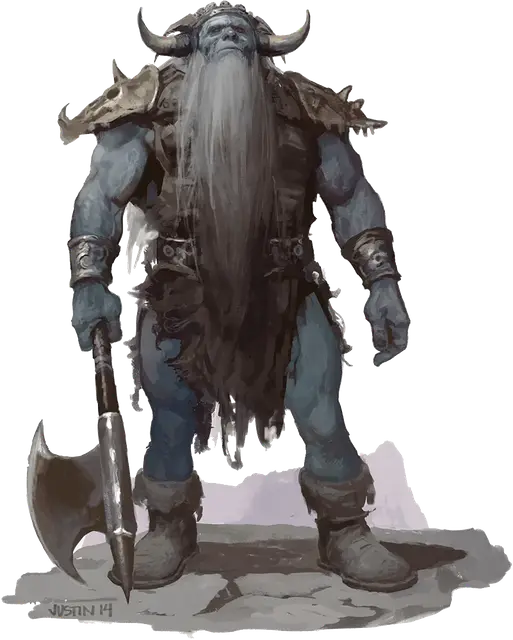

Ледяной великан
Frost Giant
Огромный Великан, нейтрально-злой

Класс Доспеха 15 (лоскутный доспех)
Хиты 138 (12к12 + 60)
Скорость 40 футов
| мод | спас | ||
|---|---|---|---|
| СИЛ | 23 | +6 | +6 |
| ЛОВ | 9 | −1 | −1 |
| ТЕЛ | 21 | +5 | +8 |
| мод | спас | ||
|---|---|---|---|
| ИНТ | 9 | −1 | −1 |
| МДР | 10 | +0 | +3 |
| ХАР | 12 | +1 | +4 |
Навыки Атлетика +9, Восприятие +3
Иммунитет к урону холод
Чувства пассивное Восприятие 13
Языки Великаний
Опасность 8 (3900 опыта)
Бонус мастерства +3
Среда обитания Арктика, Горы
Особенности
Новые опции для великанов. Некоторые взрослые морозные великаны являются умелыми охотниками, они конструируют сеть нагруженные снизу фрагментами металла или костей. Эта способность представлена в виде следующих действий. (Storm King's Thunder)
Утяжелённая сеть. Дальнобойная атака оружием: +5 к попаданию, дистанция 20/60 фт., одно Маленькое, Среднее или Большое существо. Попадание: Цель опутана до тех пор, пока не выберется из сети. Любое существо может действием совершить проверку Силы Сл 17, чтобы освободится или освободить другое существо из сети, оканчивая эффект. Нанесение 15 рубящего урона по сети (КД 12) уничтожает сеть и освобождает цель.
Действия
Мультиатака. Великан совершает две атаки секирой.
Секира. Рукопашная атака оружием: +9 к попаданию, досягаемость 10 футов, одна цель. Попадание: Рубящий урон 25 (3к12 + 6).
Камень. Дальнобойная атака оружием: +9 к попаданию, дистанция 60/240 футов, одна цель. Попадание: Дробящий урон 28 (4к10 + 6).
Описание
Ледяные великаны — громадные грабители с морозных земель, что лежат за гранью цивилизации — это жестокие, выносливые воины, живущие за счет добычи с набегов и грабежей. Они уважают лишь грубую силу и боевые навыки, демонстрируя их шрамами и отвратительными трофеями, полученными от врагов.
Ледяные сердца. Ледяные великаны это существа льда и снега. Их волосы и бороды бледно-белые или светло-голубые, скованные морозом и гремящие сосульками. Их плоть синяя, словно ледник.
Ледяные великаны живут на высоких пиках и в ледяных ущельях, где золотая голова солнца скрыта зимой. Зерновые не прорастают в их морозных селениях, а скота, по сравнению с тем, что захватывают в налетах на цивилизованные земли, держат мало. Они охотятся за дичью в тундре и горах, но не готовят её, так как мясо только что убитой добычи слишком горячо на их вкус.
Грабители во вьюге. Боевые рога ледяных великанов ревут, когда они выдвигаются из своих ледяных крепостей и ледниковых разломов во время завывающей бури. Когда же буря утихает, деревни и фермы лежат в руинах, а вороны слетаются пировать на трупах тех, кто был достаточно глуп или не везуч, чтобы встать на пути великанов.
Постоялые дворы и таверны больше всего страдают от причиненного урона — их подвалы пусты, и бочек эля и меда больше нет. Кузнецы тоже готовы закрыться — железо и сталь забрали. К удивлению, не потревоженными остаются дома ростовщиков и богатых горожан — для этих грабителей мало проку от монет и безделушек. Ледяные великаны ценят лишь драгоценности и украшения, достаточно большие, чтобы их можно было носить или чтобы их хотя бы было видно. Однако даже такие сокровища чаще всего сохраняют для торга с другими великанами, более искусными в создании металлического оружия и доспехов.
Правящие силой. Ледяные великаны уважают грубую силу больше чего-либо ещё, и место в иерархии ледяных великанов основывается на признаках физической мощи, таких как превосходная мускулатура, шрамы из знаменитых сражений или трофеи из тел поверженных врагов. Задания, вроде охоты, ухода за детьми и ремесла, дают великанам сообразно их силе и выносливости.
Если встречаются ледяные великаны различных кланов, и статус их неясен, они борются за господство. Такие встречи похожи на фестивали, где великаны восхваляют своих героев, бесстыдно хвастаются и бросают друг другу вызовы. Бывает и так, что неофициальная церемония становится хаотичной схваткой, в которой оба клана дерутся, валя деревья, разбивая лед на замерзших озерах и вызывая лавины на заснеженных горах.
Воюй, не производи. Хоть ледяные великаны и считают недостойным рабское ремесло, они высоко ценят навыки резьбы и обработки кожи. Они создают свою одежду из шкур и костей зверей, а из обычных или слоновьих костей вырезают драгоценности и рукояти для оружия и инструментов. Они используют одежду и броню своих врагов, связывая щиты в кольчугу и приматывая клинки мечей к деревянным рукояткам, создавая гигантские копья. С поверженных драконов можно добыть лучшие боевые трофеи, и величайшие ярлы ледяных великанов носят доспехи из драконьей чешуи или владеют кирками или булавами из драконьих зубов и когтей.
См. дополнительно статью: "Бестиарий: Великаны"